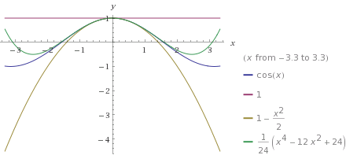

MAT106 for ELK og KOM
Uke 5
10.02.2016
Alexander Lundervold
institutt for data- og realfag
På mobil? Swipe
Forrige uke
Uendelige rekker
- Konvergens for rekker med postivie ledd: forholdstesten
- Ikke nødvendigvis positive ledd: absolutt konvergens, alternerende rekke-testen (Leibniz-testen)
- Feilestimering: kutt rekke etter endelig antall ledd. Hvor stor er feilen?
- Estimat basert på alternerende rekke-testen
Forrige uke
Potensrekker
\[\sum_{n=0}^{\infty} c_n (x-a)^n\]- Konvergens av potensrekker
- Enkle eksempler på funksjoner representert ved potensrekker
Denne uken
- Manipulasjon av potensrekker: lage nye representasjoner fra kjente
- Taylor- og Maclaurin-rekker
- Litt om feilestimering
- Fourierrekker
Taylorpolynom til $f(x) = \cos x$ rundt $x=0$:
{kind=link}
Taylorpolynom til $f(x) = \sin x$ rundt $x=0$

Noen viktige taylorrekker
\[\begin{align} &\frac{1}{1-x} = \sum_{n=0}^{\infty} x^n, \qquad |x| < 1\\ &e^x = \sum_{n=0}^{\infty} \frac{x^n}{n!}, \qquad \text{for alle x}\\ &\cos x = \sum_{n=0}^{\infty} \frac{(-1)^n}{(2n)!}x^{2n}, \qquad \text{for alle x}\\ &\sin x = \sum_{n=0}^{\infty} \frac{(-1)^n}{(2n+1)!}x^{2n+1}, \qquad \text{for alle x}\\ &\ln(1+x) = \sum_{n=0}^{\infty} \frac{(-1)^{n+1}}{n} x^n, \qquad x \in (-1, 1]\\ &\arctan(x) = \sum_{n=0}^{\infty} \frac{(-1)^n}{(2n+1)!}x^{2n+1}, \qquad x \in [-1,1] \end{align}\]
OPPGAVE: Hva er taylorrekken til $\sin(x^2)$?